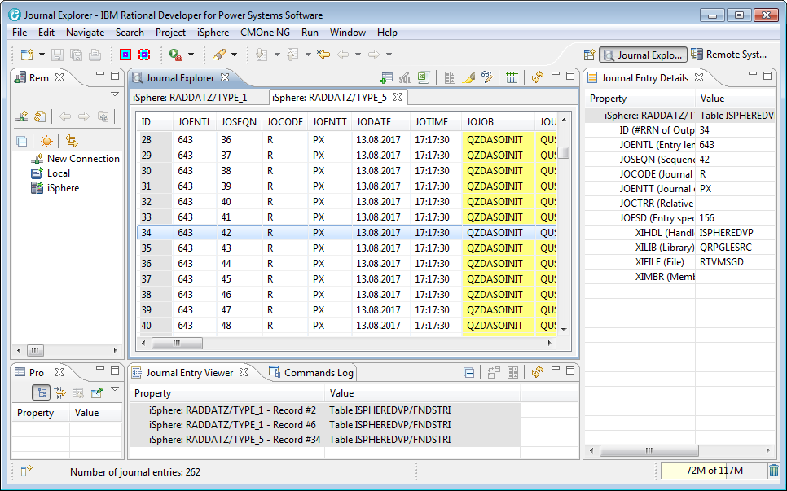
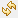
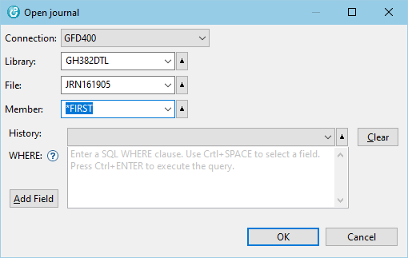
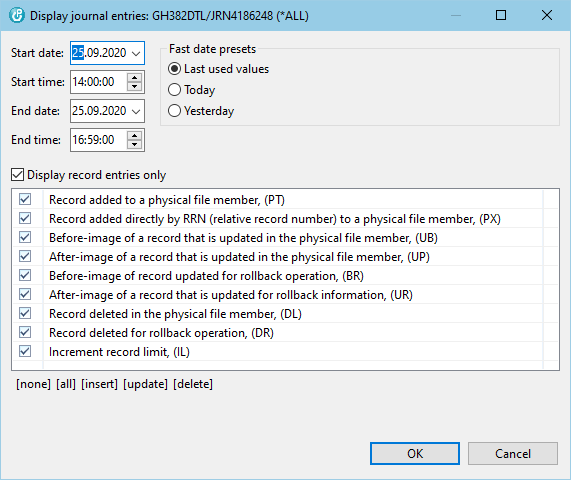
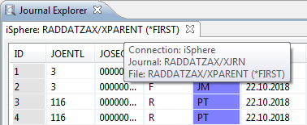
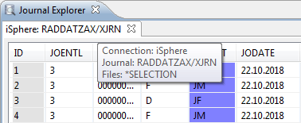
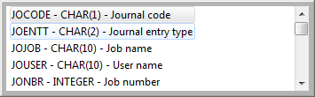
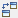
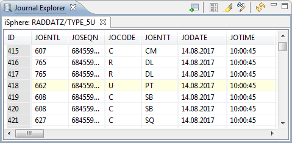
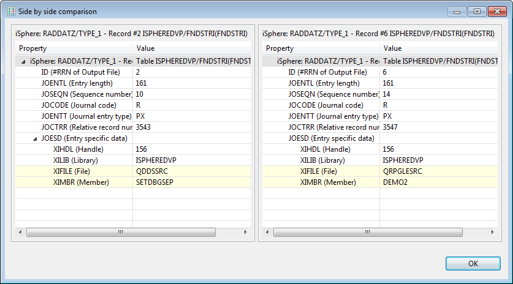

The Journal Explorer is a set of views bound to a perspective, used for exploring IBM i journal
entries that have been exported to an output file. The following types of output files of the
DSPJRN command are supported:
The Journal Explorer is a set of views bound to a perspective, used for exploring IBM i journal
entries that have been exported to an output file. The following types of output files of the
DSPJRN command are supported:
You can also launch the iSphere Journal Explorer from the context menu of a physical file of an object filter in the Remote System Explorer perspective.
| Notice: Your IBM i must be at least a release level V5R4M0 to retrieve journal entries from a journal receiver. However exploring an output file is possible at lower releases. |
Example of creating a *TYPE1 or *TYPE2 output file:
Example of creating *TYPE3 or higher output file:
| Notice: Please check your journal attributes, if fields are unexpectedly empty. You
need to specify parameter FIXLENDTA when creating the journal if you want to see fields
like Program library name, System sequence number, Remote address,
Thread identifier, Logical unit of work or Transaction identifier. Use
to change the journal afterwards: CHGJRN ... JRNRCV(*GEN) FIXLENDTA(*JOB *USR *PGM *PGMLIB *SYSSEQ *RMTADR *THD *LUW *XID) |
You can open the Journal Explorer perspective from 'Window -> Open Perspective -> Other...'. The perspective looks like that:

The columns can be colored on the preferences page of the Journal Explorer. By default the #RRN and the job and object related columns are color-coded.
The Journal Explorer view displays the journal entries of all open output files. Output files are opened in individual tabs. The properties of a selected journal entry are displayed in the Journal Entry Details view, which by default is at the right hand side of the Journal Explorer view.
The following actions are available:
 | Opens an output file created by the DSPJRN command. | |
 | Opens an SQL editor for editing the SQL WHERE clause for filtering the journal entries. (Local operation that does not contact the host system.) | |
 | Export all journal entries to Excel. Use the context menu to export selected journal entries. | |
 | Compares the selected journal entries and shows the result side by side. | |
 | Highlights user-created journal entries. | |
| Opens a dialog for configuring the parsers. | ||
 | Resets all columns to their default size. | |
|  | Reloads the journal entries form the output file or the journal receiver. (Remote operation that reloads the data from the host.) |
Click the Open journal output file button at the top of the Journal Explorer view:
Fill in the library, file and member names and click the [OK] button.

The following actions are available:
| Connection | Specifies the connection the output file is loaded from. | |
| Library | Specifies the name of the output file. | |
| File | Specifies the name of the library where the output file is stored. | |
| Member | Specifies the name of the member of the output file. | |
| WHERE | Specifies a SQL WHERE clause to select a subset of the records of the output file. |
Right-click one or more journaled physical files of an object filter in the Remote System Explorer perspective and select Display Journal Entries.... Select the range of journal entries that you want to explore and click the [OK] button. The journal entries are retrieved by QjoRetrieveJournalEntries API.

The following actions are available:
| Start date | Specifies the date of the first journal entry being retrieved. | |
| Start time | Specifies the time of the first journal entry being retrieved. | |
| End date | Specifies the creation date of the last journal entry being retrieved. | |
| End time | Specifies the creation time of the last journal entry being retrieved. | |
| Fast date presets | Click one of the available options to quickly select a time span. | |
| Display record entries only | Specifies whether to retrieve only journal entries of record level operations. | |
| List of record entry types | Specifies the journal entry types that are retrieved. | |
| Label: [none] | Deselects all selected journal entry types. | |
| Label: [all] | Selects all journal entry types. | |
| Label: [insert] | Selects all journal entry types that are related to 'write' operations. Use the CTRL or ALT key or double-click to negate the operation. | |
| Label: [update] | Selects all journal entry types that are related to 'update' operations. Use the CTRL or ALT key or double-click to negate the operation. | |
| Label: [delete] | Selects all journal entry types that are related to 'delete' operations. Use the CTRL or ALT key or double-click to negate the operation. |
The Journal Explorer opens multiple tabs when it is started for a group of selected files. The files are grouped by Connection and Journal.
| One file selected | Two or more files selected |
|---|---|
|  |  |
| Tab shows the name of the selected file. | Tab shows the name of the associated journal. |
Click the Edit SQL button at the top of the Journal Explorer view to open the SQL editor:
The SQL Editor is used to enter a SQL WHERE condition for selecting a subset of the available journal entries. Enter the WHERE condition and then click the Execute button or press Ctrl+Enter to execute the query. Refer to the SQL Reference to see the list of available functions.

Use Ctrl+SPACE for content assistance.

The following actions are available:
| Ctrl+SPACE | - | Content assist. |
| Add Field | - | Content assist. |
| Clear | - | Clears the where condition. |
| Ctrl+ENTER | - | Executes the query with the current where condition. |
| Execute | - | Executes the query with the current where condition. |
| Notice: Filtering jurnal entries is a local task, which does not reload the journal entries from the host. |
The Journal Entry Details view displays the details of a journal entry, selected from the Journal Explorer or Journal Entry Viewer view.
The Journal Entry Viewer displays the selected journal entries of all open journal output files. It can be used as a workbench for analyzing journal entries.
The following actions are available:
| Collapses the whole tree. | ||
|  | Compares the selected journal entries. Properties that are different are highlighted. | |
| Compares the selected journal entries and shows the result side by side. | |
| Re-parses the journal entries. |
Example of highlighted user-created journal entries:

Example of compared journal entries:

Example of a side-by-side compare:
